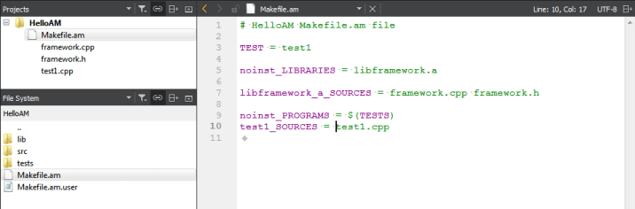
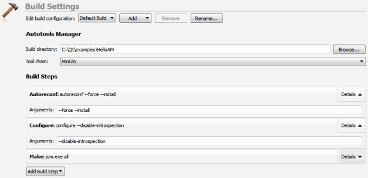

Setting Up an Autotools Project
The AutotoolsProjectManager is a plugin for autotools support. It is disabled by default. To enable the plugin, select Help > About Plugins > Build Systems > AutotoolsProjectManager.
To use the plugin, restart Qt Creator.
To work with your Autotools project in Qt Creator:
- Select File > Open File or Project.
- Select the Makefile.am file from your project. This is the only way you can use the autotools plugin.
- Select the build directory. Only in-source building is currently supported.
- Select Finish. Qt Creator displays the project tree structure. The root node displays the project name. All project files are listed below it and you can open them from the list.

- Select Run to build and run the application. The predefined build steps (autogen.sh or autoreconf, configure, and make) are executed.
The first time you run the application you must choose the executable.
- To check and edit autotools build steps, select Projects > Build Settings.
You can add parameters to the predefined autotools build steps.
